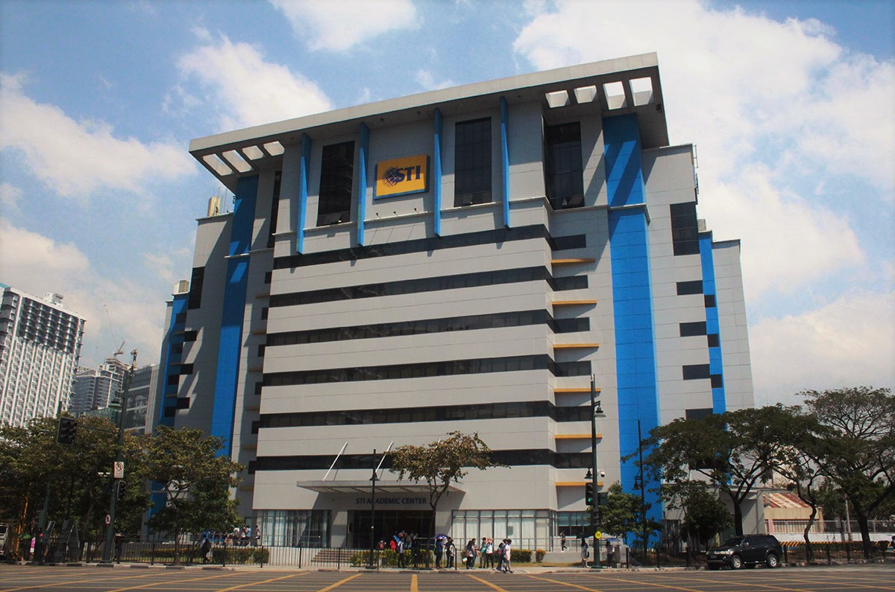

The History

Bethesduh Incorporation was founded on the 12th of October, 2016, in STI College Global City, Taguig. We started with five members and a mutual love for gaming. The original founders are proud to say that they are still part of the company. The name itself comes from our desire to appeal to the sense of humour of the younger generations, and our own love of fun and jokes.
With the combination of our skills and expertise in various fields, we started making indie games and put them up on the internet. Fellow gamers found our creations and Bethesduh Inc. quickly became popular. Throughout the years, we made various popular games, and you may remember classics like our most famous "Young Scrolls" series.